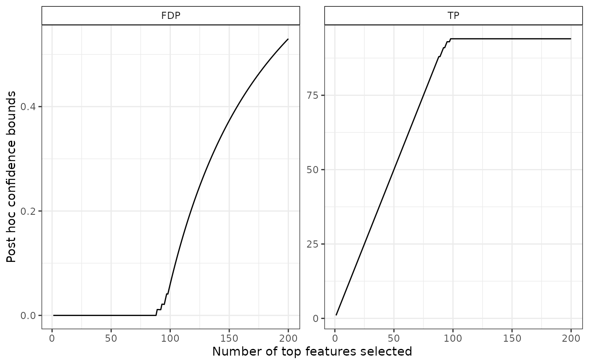
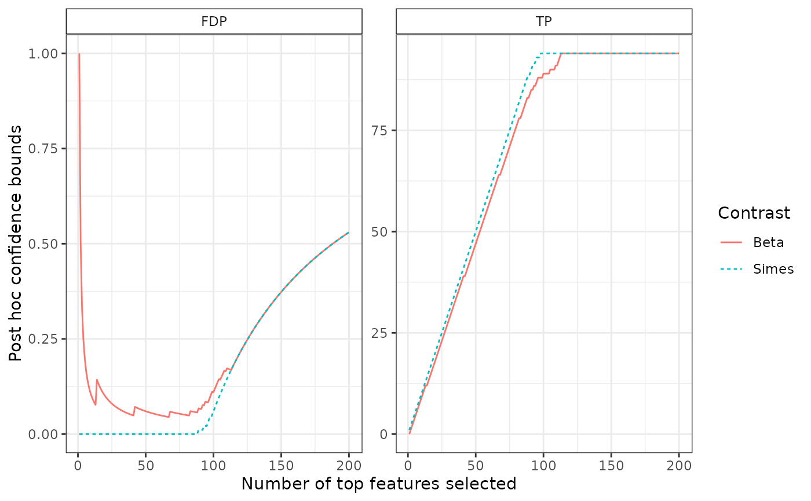

Plot confidence bound
plotConfCurve(conf_bound, xmax, cols = NULL)A data.frame or a list of data.frames as output by predict
Right limit of the plot
A vector of colors of the same length as conf_bound
Blanchard, G., Neuvial, P., & Roquain, E. (2020). Post hoc confidence bounds on false positives using reference families. Annals of Statistics, 48(3), 1281-1303.
# Generate Gaussian data and perform multiple tests
obj <- SansSouciSim(m = 502, rho = 0.5, n = 100, pi0 = 0.8, SNR = 3, prob = 0.5)
res <- fit(obj, B = 100, alpha = 0.1)
cb <- predict(res, all = TRUE)
plotConfCurve(cb, xmax = 200) ## equivalent to 'plot(res, xmax = 200)'

# plot two confidence curves
res_beta <- fit(res, B = 100, alpha = 0.1, family = "Beta", K = 20)
cb_beta <- predict(res_beta, all = TRUE)
bounds <- list("Simes"= cb,
"Beta" = cb_beta)
plotConfCurve(bounds, xmax = 200)
